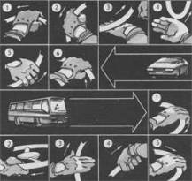

Скоростное руление одной рукой
Профессионально подготовленный водитель обязан владеть техникой руления одной рукой, особенно левой, так как для преодоления некоторых критических ситуаций необходимо одновременно с рулением переключать передачи или включать на некоторое время стояночный тормоз для блокирования задних колес автомобиля. Кроме того, руление одной рукой повышает безопасность при скоростном движении и сложном маневрировании задним ходом, так как позволяет расширить сектор заднего обзора за счет разворота корпуса на 90° вправо.
Техника кругового руления одной рукой имеет следующие особенности (позиции 1–6 на верхнем рисунке). Исходное положение руки – на цифре “12” (по аналогии с циферблатом часов). После поворота рулевого колеса до положения руки на цифре “8” или “4” (в зависимости от направления вращения) водитель перехватывает рулевое колесо в нижнем секторе способом перекат через тыльную сторону кисти. Этот способ позволяет, не теряя контакта с рулевым колесом, развернуть кисть на 180°, чтобы перейти от тяги вниз к тяге вверх.
На автомобилях с горизонтальным расположением рулевого колеса (автобусы, некоторые грузовые автомобили) круговое руление выполняется способом переката через ладонь (позиции 1–5 на нижнем рисунке.)

В некоторых критических ситуациях при заносе и вращении автомобиля первый оборот лучше выполнить левой рукой, а правой включить понижающую передачу. Руление одной рукой поможет вам более безопасно маневрировать задним ходом, т. к., повернув корпус, вы увеличите сектор обзора.
Главное – научится перекату руки в нижнем секторе. Этот прием позволит сохранить контакт с рулевым колесом при вращении.
Конечно, выполнение переката не создает идеальных условий для контроля за рулевым колесом в нижнем секторе, так как возможно проскальзывание руки. Но все же это намного лучше, чем полная потеря контакта. Обеспечить большую безопасность приема и сократить 1 его время позволяет рывковый способ руления. Такой способ необходим, чтобы перекат происходил при инерционном вращении рулевого колеса, так как из-за недостаточного контакта руки с рулевым колесом исключается возможность максимальной тяги.
Круговое руление одной рукой является элементом некоторых приемов высшего мастерства. Приемы и способы их выполнения следующие:
стабилизация автомобиля при критическом заносе – противодействие заносу обеспечивается скоростным рулением двумя руками, но первый оборот (поворот на 360°) желательно выполнить одной рукой, так как этот прием быстрее за счет меньшего числа перехватываний;
скоростной разворот автомобиля на 180° – одновременно с рулением водитель правой рукой включает и выключает стояночный тормоз, добиваясь этим скольжения задней оси и, как следствие этого, – вращения автомобиля;
стабилизация автомобиля при вращении на 360° – дважды используется руление одной рукой. Вначале для разворота на 180° (см. предыдущий прием), а затем для “доворота” автомобиля вращением вокруг задних колес (“полицейский разворот”).
Круговое руление одной рукой чаще всего сочетается с рулением двумя руками и позволяет обеспечить стабилизацию автомобиля в ситуациях, связанных с потерей его устойчивости.